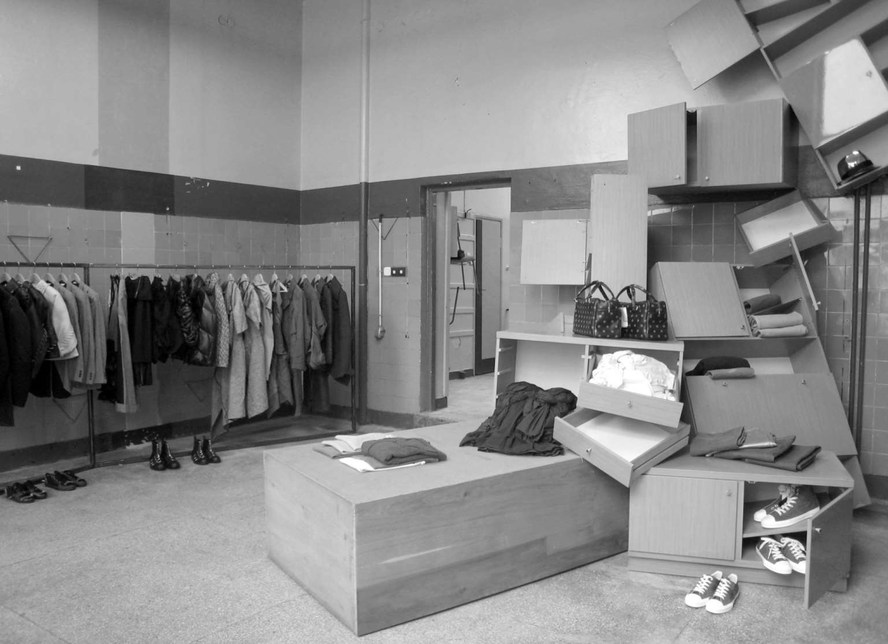
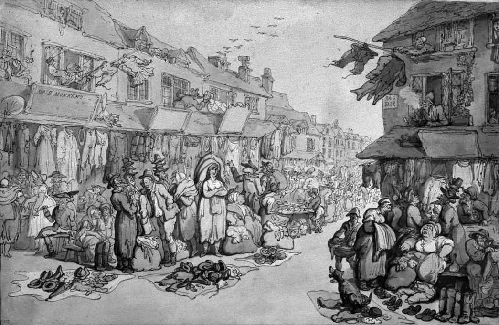
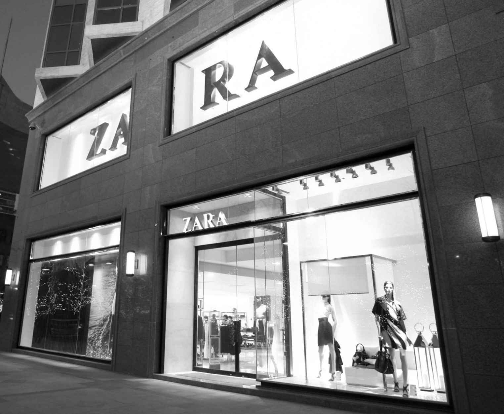

2007年CDG在华沙开出一家新的游击店 [5] 。根据计划这间店只会在这里运营一年，以作为品牌类似的“快闪”店项目的一部分。第一家游击店2004年在东柏林开业，接下来品牌又在巴塞罗那和新加坡开设了相似的短期精品店。每间店都独具个性，又与它所在的环境相协调。华沙店完整保留了选址原本的苏联时代果菜店外观：绿色的瓷砖，不平整的抹灰，粗糙墙面上还有家具配件扯掉后留下的痕迹。整个空间的美学延伸到了“陈列橱柜”，这些柜子都是苏联时期的家具，被安装后用来放置品牌的产品。它们杂乱无章地贴在墙上；抽屉被拉扯出来，歪歪斜斜，半开着露出里面晶莹的香水瓶；破损的椅子从天花板上悬垂下来，破旧的坐垫上摇摇欲坠地摆放着各式鞋子；服装悬挂在光秃秃的金属横杆上；灯饰上垂下的电线拧作一团，盘踞在地板上，一半隐没在堆叠起来的家具之下。

图12 2008年CDG华沙游击店内部设计，看上去如同一场现代主义家具展
整个布置营造出一种被遗弃的贮藏室的效果，店主似乎匆忙逃离，只留下满屋的服装配饰。这种氛围是店铺地理位置与历史背景的一种象征——共产主义被前苏联阵营国家抛弃，资本主义即将取而代之。这样的变革也让人们改变了曾经只买需要的，或者说只能有什么买什么的消费习惯，转而开始在丰富的商品选择中消费自己梦寐以求的东西。店铺打造出的潦草感同时也呼应了游击店的本质，即它会突然占据某一城市空间。实际上这已经是品牌在华沙的第三个化身，第一次尝试是2005年在一座桥下的废弃通道里完成的。
尽管这些店铺看似偶然又毫无章法，它们却是CDG在时装零售业保持自己前沿地位的精心策略的一部分。一部分店铺只营业几天，有的则持续一年；所有的店铺均未进行广告宣传，除了以电子邮件告知老顾客，或者在开设当地张贴几幅海报，而最关键的是靠人们口口相传。这些过程仿效了亚文化的传播效果，只需告知小圈子内的舆论制造者，而这一群体其实早已认可品牌在时尚行业里代表前卫风格和设计的先驱者地位。游击店为自己的产品营造出一种独有、神秘又刺激的氛围。这种氛围促进了一种感觉，即来访者有知情的特权，让他们认为在这里购物也是参与了一场半私密的活动。通过强化欲望、生活方式和个人身份，品牌以此切入了21世纪早期高级时装消费主义中的关键元素。照此，这家游击店再次如各种街头文化一般，在彰显个性的同时又表明了自己属于某一群体。它主张购物其实是一种体验，对这间店来说，人在其中犹如参观一家小型画廊。重要的是，它以一种贯穿品牌知识分子精神特质的方式树立品牌形象。CDG显然拒绝了许多时尚广告与销售行为中那些过度且颓废的东西，同时针对品牌核心客户拥有一套精明的营销策略，也不断吸引着充满好奇的“路人”。
1980年代开始，设计师川久保玲就开设了一系列极具创新性的店铺。她早期的精品店中节约而格局紧凑的空间沿袭了传统和服店的美学理念，将服装产品整齐叠放在货架上。除此之外还通过只陈列少量产品来创造出一种虔诚的感觉，让购物者能够关注产品的细节和整体包装。她的竞争品牌以及像盖璞和贝纳通（Benetton）这样的高街品牌仿效了这种做法，也开始运用木质地板、纯白墙面，把毛衣成堆叠放在货架上，并精心布置强化空间感和利落线条的挂衣杆。
川久保玲和她的丈夫阿德里安· 约菲2004年在伦敦开张的“丹佛街集市”则另辟蹊径，在整栋建筑物中的许多不同空间中精心展示各种时装和设计品牌。在某一层，更衣室被设置在一个巨大的镀金鸟笼之中；另一层上，服装却和花卉绿植、园艺工具组合在一起。川久保玲为“丹佛街集市”赋予了灵活性和多样性的概念，她在店铺的网站上写道：
这一氛围恰如一个19世纪集市的现代版本，充斥着一大批不断变化的独家时装产品线和不拘一格的物件。
跟CDG更为稳定的精品门店比起来，“丹佛街集市”这样的经营模式强调了现代零售业的多样化和灵活性。在饱和的市场环境里，所有的设计师和时装品牌都必须突出自己的个人特征才能建立稳固的消费群体。CDG代表了这一经营模式的前沿，它所采取的这些方法令人不禁想起更早年代的行业前辈，不管是19世纪清楚一定要给商品制造视觉冲击力的百货商场经营者们，还是20世纪早期将自己的沙龙打造成反映个人服装风格的私密感官空间的高级时装设计师们。
零售业的发展
文艺复兴时期，纺织品与镶边配饰仍旧从集市和众多流动商贩手中采买，这一传统延续了几个世纪。蕾丝、缎带以及其他配件要么被带到乡间四处兜售，要么批发给本地商店。规模稍大的村子里会有贩卖羊毛和其他材料的布商，城镇里会有销售高级丝绸和羊毛的女帽店。本地裁缝和鞋匠则会生产衣服和配饰，一件衣服的各个组成部分需要从不同的商店采购来再由匠人制作，因此，购置服装极有可能是一个漫长的过程。各个国家的购买模式也有所不同。在英国，为了买到更时髦的服装，人们经常前往附近市镇或城市。然而在意大利，地方各自为政、地理分离破碎的境况使得不同区域间的差异更为显著，因而造就了各个村庄中种类更加丰富的店铺。
全球纺织品贸易已发展成形上千年，国际商路跨越亚洲、中东直达欧陆。人们举办大型市集来向商贾和小贩购买及销售面料，他们会不断流动，前往布鲁日或日内瓦，或者去每年举办三次集市的莱比锡，又或者前往利兹的布里格市场。17世纪时，英国及荷兰东印度公司强化了与亚洲之间的商贸联系。到18世纪中叶，诸如印度棉布等已经成为日常面料。当时印度棉布相当时兴，更重要的是它既便宜又耐水洗，因而大幅提升了各个阶层人们的衣着清洁程度。得益于航海运输的改进，这些商品能够跨越全球运送。同时，对于时髦面料的需求激增，因为越来越多的人希望自己能够衣着时髦体面，能够符合当代社会外表和行为举止的典范。这些东印度公司用不断推新变化的织物设计，国外进口的丝绸、棉布、印花布等满足着人们的欲望。商人们鼓励时尚先锋们穿着自己的最新商品参加会被时尚杂志报道的时髦社交活动，以此来推广新的时装。伍德拉夫· D.史密斯曾记述了东印度公司如何安排印度工匠开发更多热门设计，然后随着时尚从巴黎传播出去而将这些时装卖遍欧陆。正如丹尼尔· 罗什在提到法国裙装变化时所说的那样，到18世纪末，大体上购物者可选择商品的门类远为丰富，“但是一切与外表展示相关的东西，无论是社会还是个人需要，都增加得更多”。

图13 伦敦街头集市的二手衣物贸易已经持续了几个世纪
纺织品和服装一度较为昂贵，被当作仆人月例的一部分来发放，并在家人手里一代代留传下来，也会在二手商店、集市一环接一环地出售，直到它们变成破布或者再生成纸张为止。随着18世纪耕作方式得到改进，财富分配有所提升，更多人想要购买时尚服饰，起码能让自己在礼拜日穿得最为体面。店主们开始在陈列展示产品以及服务顾客上花费更多时间。到了1780年代，平板玻璃橱窗的使用让陈列更加引人注目，店内的装饰陈设也开始愈发精致起来。时尚购物已然逐步塑造起城市的地理。
伦敦的考文特花园成为第一个时尚郊区，伊尼戈· 琼斯操刀设计的广场上进驻了各类布料商和制帽店，这些店铺在1666年的“伦敦大火”之后搬到了城西。在巴黎，皇家宫殿完成改建，某种意义上成为第一家专门打造的购物中心，沿着宫殿花园的四周，一排排小型商铺和咖啡馆延展环绕。广告和营销手段也在同步发展。传单上夸耀着某家店的各色成衣服饰，或是丰富的面料选择；时尚杂志里刊登着对最新款式的细致描述和精美插画，企业生产商和销售员们则极力鼓动时尚引领者们穿着自家产品出现在公众眼中。自文艺复兴起，购物与人们逐渐增强的个性意识一道携手前进。时髦裙装提供了在视觉上表达个性的手段，而清楚时装应该在哪儿买、怎么买则是达成目标的关键。托拜厄斯· 斯摩莱特等小说家们讽刺了人们试图打扮得富有吸引力、时髦，同时试图使自己看起来高于自己的地位的行为。斯摩莱特察觉到了日益发展的消费文化，而这一文化在接下来的世纪里将繁荣兴旺。
购物的发展
1800年代早期，小型的专卖店仍旧十分重要，不过在大型公司兴起后大范围的商品和服务才聚集起来，这预示着购物将进入一个全新的时代。阿里斯蒂德· 布西科1838年在巴黎创办乐蓬马歇商店，到1852年时它已然演变成一家百货公司。它把面料、男士服饰还有其他时尚产品集合在一起，并且通过在店内设置餐厅为购物引入了一项强烈的社会元素。布西科开发出多种顾客服务，这进一步促使人们意识到店铺员工与顾客间关系的改变，以及顾客与使用店铺之间关系的变革。他固定了价格，并在所有商品上进行标注，这样一来就省掉了讨价还价的必要，同时他也允许退换货。乐蓬马歇百货是最早的一批百货公司之一，另外还包括曼彻斯特的肯德尔· 米尔恩，它由1831年的一个集市演变而来，以及纽约的斯图尔特，它由1823年的一间小布料店逐步转型而成，到1863年时已在纽约百老汇这一主要时装购物区稳坐头把交椅。这些百货商店演变出越来越成熟复杂的销售技巧。店铺欢迎顾客在店内随意浏览，循着精心设计的路线穿过店铺各楼层，走进店内的咖啡馆和餐厅，或是驻足观看店中安排的娱乐活动。购物首次变成了一种休闲的追求，专注于在一个时髦而令人安心的环境之中消遣时光，当然还希望顾客能花费金钱。
女性作为百货公司的主要目标，常常被它们精心布置的橱窗陈设中突显高级面料的光效、货品的丰富色彩和质感深深吸引，不觉间踏进这些精美的建筑。从前的中产阶级和上层阶级女性是不可能单独购物的。即便有女佣或随从的陪侍，某些街道在一天中的特定时段也在她们的活动边界以外。比如，伦敦邦德街的店铺主要是面向绅士们的，女士如果下午前往的话会被认为非常不得体。这些小心谨慎的礼法规定被百货公司慢慢侵蚀，它们鼓励女性在那里进行社交往来、任意走动浏览，苏珊· 波特· 本森曾引用波士顿一位店主爱德华· 法林的话，称其为“没有亚当的伊甸园”。这不仅赋予了女性更大的自由，更塑造了作为消费者的她们。埃丽卡· 拉帕波特以一种模棱两可的表述描绘了这一改变。维多利亚时代人们心中理想的女人应该一心系在家人和家庭上。女性顾客出门为她们的孩子和丈夫采买东西可以被看作是在关注这些家务事，另外她们也会给自己购买能够彰显她们家世身份和品位的时装。然而，外出购物同时意味着离开家中的私密环境，前往城市中心地带，置身先前男性主导的公共领域之中。购物同样更关注人的感官体验，而非那些更加高尚的女性消遣活动。用拉帕波特的话来说，这是城市作为“享乐之地”发展过程的一部分，在其中“购物者被命名为享乐的追寻者，由她对商品、场景还有公共生活的渴求来下定义”。时装因此给人带来了一种矛盾的体验。购买服装、饰品和男士服饰用品能让女性在19世纪不断发展的城市场景里占据一片新的空间，同时又潜移默化地引导她们接受一种注重矫饰和欲望的生活方式。店家们努力让自己的陈设尽显诱惑力，煽动女人们放任自我在他们的店面之内消磨整日，或是在大型市镇和城市里集聚的各类店铺之间流连。
每一家店铺都确立起自己独有的特性，志在招徕被自家风格和琳琅商品吸引的顾客们。这样，自由百货于1875年在伦敦开业，店内销售从东方异域运来的家具和各类器物，同时还有“唯美”服装，灵感源自古代的宽松长裙，这在盛行的紧身束身衣之外给人们提供了全新的选择。一些百货公司还在其他的市镇或城郊开设分店，其中就有1877年全英国首家专门设计建造的百货公司，即位于伦敦南部布里克斯顿的乐蓬马歇百货。还有一些百货公司在时髦的海边度假区开设分店，比如马歇尔和斯奈尔格罗夫百货的斯卡伯勒分店，这家店只在假日季营业。百货公司的扩张把时尚商品带给更广泛的人群。大多数百货商店都拥有自己的制衣部门，在19世纪后半叶成衣普及后，它们也开始大批销售成衣系列。百货商店全力构建着与顾客之间的关系，通过服务、品质和价格赢得顾客的忠诚。
这些发展不但改变了人们购买面料和服饰的方式，同时还塑造了大众对于应该如何举手投足、穿衣打扮的观念。店铺的广告向人们展示着可被接受的审美标准，并宣传着时尚个性的典范。这些都基于时装的不断传播以及人们融入消费者社会的渴望，而消费者社会在世纪之初便已成形。尽管百货公司代表了资产阶级的理想，它们却向更广泛的人群敞开着怀抱。1912年塞尔福里奇百货在伦敦成立，它沿用了美国的方式，搭配公司标志性的绿色地毯、纸笔、货车，还设置了一个极受欢迎的“特价地下区”。百货公司开放式的设计让更多群体的人们可以走进其中，自由浏览。虽然奢华的店铺也许吓退了一些购物者，但仍有人愿意努力为这些店中的奢侈品攒钱，店中顾客的尊贵身份和时髦风格让他们无限向往。到了1850年代，公共交通方式的发展使得乘坐公共汽车和火车出行购物更加简单和便宜。大型城市中的地铁交通让这一过程变得更加轻松，也鼓励人们把“购物一日游”当成一种愉快而又便捷的放松与娱乐方式。
百货商店极力吸引着顾客，它们综合运用盛大的时装秀以及令人兴奋的新科技，前者把法国时装的魅力展现在更多受众面前。1898年，伦敦哈罗德百货安装了第一批在楼层间运送顾客的电动扶梯，引来大批民众并被媒体广泛报道。20世纪早期，美国商店纷纷举办系列法国时装秀，真实的模特们在错综复杂的伸展台上穿行，在精心布置的灯光下散发着光彩。这些华丽表演的名字让人想到它们那颓废与奢华的氛围。1908年，费城的沃纳梅克百货举办了一场以拿破仑为主题的“巴黎派对”（Fête de Paris），呈现了法国宫廷的生动场面。同时，1911年纽约的金贝尔斯则办了一场“蒙特卡洛”活动。店内的剧场建造起地中海风格的花园，安置了轮盘赌桌和其他道具，让成千上万的到访者感受到了真实的里维埃拉奢华风情。
百货公司把时装带给普罗大众，从布拉格到斯德哥尔摩，从芝加哥到纽卡斯尔，不断在时尚购物地区开业，尽管如此它们依然远远不是时装唯一的来源。精英们依旧定期光顾那些为自己家族世代服务的皇室制衣商和定制裁缝。微型的专业商业中心繁荣如常，且常顺着新的潮流不断涌现。譬如20世纪早期人们对镶着羽毛的大帽子的狂热，促使商店开始销售鸵鸟羽毛等镶边装饰。变化的风格和流行的饰物同样吸引着男性顾客。除了向富有男性销售珠宝和饰品的奢侈品店，还出现了面向年轻男性的商品，这一群体迫不及待地想要花掉自新兴的白领工作中赚得的金钱。和女性时装类似，舞台上的名流们也推动着男性时装风格的传播，此外还有越来越多的银幕明星以及运动明星。领带、领结、领扣、袖扣众多颜色和图案的不断变化，为每一季的男士套装带来了活力。邮寄购物则是另一项重大发明，特别是在美国、澳大利亚和阿根廷这样国内城市间距较远、亲自前往购物比较困难的国家。百货公司都有各自的邮购销售部门，这主要得益于邮寄包裹业务的改进和有线电话的采用。芝加哥的马歇尔沃德百货拥有可谓业内最知名的邮购业务，它的产品目录用不断丰富的面向所有家庭成员的成衣时装吸引着美国人。运输方式的改进同样推动了这一行业，货物先后被运货车、马车运送，再到后来坐上火车。
因而到了20世纪的前几十年，消费主义已经发展到覆盖了不同性别、年龄和阶层的广泛人群。随着1920年代大规模生产的方式得到改良，市场上销售的时装和饰物品类增长得也更加迅速，面对日益激烈的竞争，商店必须努力高效地销售这些商品。已经立足的百货商店和专卖店此时又加入席卷西方国家的“联营店”（“multiples”），它们可以被看作连锁店的一种早期形态。美国的连锁分店开始销售借鉴好莱坞影星服饰的价格低廉的时装，在全国广受欢迎。在英国，赫普沃斯公司从1864年建立时的裁缝铺逐步发展到在全英拥有男装门店的规模，并且仍旧在持续经营，如今已演变成了囊括男装、女装和童装的连锁商店奈克斯特。连锁商店具有集中采购和制度化管理两个优势，可以确保价格实惠的同时管理市场营销和广告活动。它们力图打造一种统一的格调，包括店面设计、橱窗以及店员制服。20世纪后半叶，连锁店的统治让人们对同质化大为诟病，而且讽刺的是消费者真正的选择变少了，但是熟悉的各个品牌在各自的分店里为消费者稳定供应着款式、质量相同的货品，这给消费者提供了保障。
与之相反的是，高级时装设计师将沿袭几个世纪的传统和当代创新方式结合起来，继续销售着他们的设计作品。客人们享受着一对一的服务和个人定制，高级时装沙龙还合并了精品店以出售成衣线早期风格的产品，还有为取悦自家这些精英顾客而特别设计的香水以及各种奢侈品。不管是只为私人顾客开放的高级时装沙龙，还是时装秀期间的精选店买手及他们的精品店，都运用了现代设计和陈设技术来彰显它们的时装潮流。1923年，玛德琳· 维奥内重新改造了她的时装店，运用了流畅的现代主义线条和古典风格的壁画。自1930年代中期开始，艾尔莎· 夏帕瑞丽着手打造了一系列超现实主义的橱窗陈列，有力宣传了她设计作品中的才思。上面两个例子中，这些艺术借鉴都与她们的服装设计理念息息相关，也跟她们的品牌精神、整体包装和广告宣传遥相呼应，为消费者创造出能够一目了然的连贯的品牌风格。
高级时装设计师们需要投射出一种专属形象，为每一件挂上他们名号的产品都笼上一层奢华的光环。尽管时装已经逐渐成为全球成衣销售行业的一件工具，许多商店依旧认为巴黎是时装新风格的重要源头。例如，美国百货公司和时装店每季都会派出买手前往法国首都采购一批“款式”，他们会取得相关许可，对这些服装进行限定数目的复制并在自家店内销售。这些设计在店铺在售的系列中将拥有最高时尚地位，此外还有大致参考巴黎流行趋势设计的其他服装，以及不断增加的化用法国风格的本土设计师作品。买手们因而扮演了一个至关重要的角色，因为他们需要理解自己所代表店铺的时尚形象和顾客的喜好。保持店内货品不断的新鲜感对于店铺可谓至关重要。1938年，梅西百货副总裁肯尼斯· 柯林斯写信给致力于促进美国时装发展的时装集团（the Fashion Group），信中说道：
这种新潮款式的快速更新是时装产业的立足之本。
萨克斯第五大道精品百货这样的大型百货公司都会开辟几条针对不同消费者的产品线。从1930年开始，公司销售起老板夫人苏菲· 金贝尔设计的独家奢侈品，并以“现代沙龙”为品牌名称，此外还有她为公司专门从巴黎挑选的时装。后来又有了各种类型的成衣线，包括运动服饰以及以年轻女大学生为目标人群设计的服装，也有类似的男性时装产品。所有这些系列综合起来为萨克斯赢得了时尚口碑，充分展示了公司在为所有客户群体提供美好衣饰上所体现出的审美和眼力。这些系列在店中专门设计的区域里销售，以反映自己的受众及目标，公司还会在每年的几个关键节点在时尚杂志和报纸上投放广告，促使销量最大化。
大萧条时期，许多店铺无奈之下暂停派人前往巴黎，并越来越依赖本土发展起来的时装。尽管经济低迷，《时尚》和《哈珀芭莎》这些时尚杂志依然为各种规模的店铺投放广告。不同国家版本的《时尚》中类似“店铺猎手”这种专栏不断怂恿着女性出门购物，并规划好“最佳”的购物区域还有最时髦的精品店和百货公司。设计师和商店通过各自的媒体代理人与时尚媒体构建起密切联系，这些代理人努力争取杂志里的广告版面和专题报道。这种关系在接下来的几十年中不断延续。不过，第二次世界大战以及随之而来的物资短缺中断了商品的流通和供应。尽管大多数被卷入战争的国家都面临着供应短缺因而只能定量配给，许多国家仍然坚持把消费用品的梦想作为激励人心的远景。
随着经济在1950年代恢复，新的举措开始发展起来。其中一个关键例证就是伦敦的设计师自营精品店在这个十年接近尾声时大量增长。这些店充分说明，只要充分理解受众，知道什么样的衣服是他们想穿的，就算是小规模的从业者也能推出时装。比如，玛丽· 奎恩特对当代时装现状的失望促使她于1955年在伦敦国王大道开出了自己的“集市”，她对当代时装现状有着自己的困惑：
奎恩特女士制作出许多有趣的服装：娃娃裙、灯芯绒灯笼裤，还有水果印花围裙装，这些服饰帮助塑造了这一时期的时装风格。她与同时期的设计师们培育出的模仿者遍布全球，渴望能够利用这股年轻人驱动的大规模生产服装的潮流。她也给未来的设计师——零售商们提供了一个发展样本，他们将来会通过为新兴青年文化设计服装而在全球树立声望。薇薇恩· 韦斯特伍德和马尔科姆· 麦克拉伦的店铺也开在国王大道上，它们变换着店铺的内外设计以及在售服装的款式，与不断演变的街头潮流保持一致。1970年代早期店铺为售卖以“不良少年”为灵感的西装的“尽情摇滚”（Let It Rock），到1970年代中期变身为崇尚硬核朋克美学的“煽动分子”（Seditionaries）与“性”（Sex），最后化身为“世界尽头”（World's End）—一间“爱丽丝梦游仙境”风格的精品店，地板肆意倾斜，时钟指针倒走。韦斯特伍德的设计和零售环境风格皆是不断流动变化的亚文化的一部分。不同的时装风格随着音乐、街头文化，还有与时装相关的艺术界的前进而涌现、变化。这种灵活性为她的店创造出一种令人兴奋的群体感与流行感，汲取自各种亚文化中的“自己动手”精神进一步强化了这一气质。正如1960年代奎恩特女士的店面，它证明了精神气质一致的店铺可以聚在一起促成生意，同时也能巩固这一区域的时尚口碑。21世纪早期，纽约的字母城也出现了设计师制衣商在同一区域密集开店、荟萃一堂的盛况。
确实，西班牙连锁品牌飒拉以糅合经典款和大牌走秀款而闻名，其商业成功建立在品牌对购物区这种有机发展的战略洞察的基础上。自1975年开出首家门店起，飒拉已经扩张到全球，在高街时尚的竞争中压倒了其主要对手。每家飒拉门店都设计得像大牌精品店，主题鲜明的服装和配饰搭配成组，为消费者展示各种穿搭建议。连锁店隶属于印第纺集团，集团旗下业务还包括马西莫· 杜蒂（Massimo Dutti）、巴适卡（Bershka）和飒拉家居。它采取的策略通常是先开一家大型飒拉门店并按照旗舰店模式运营，从视觉上呈现品牌精神，而后相邻开出集团其他分支品牌的店铺。这样的安排鼓励购物者在不同店铺间来回走动，购买印第纺旗下的不同品牌，同时又能让顾客亲自感受到每一家的服装、配饰和家居软装是如何相互搭配补充的。与此相联系的是飒拉对时装流行趋势的快速反应，它有一支小型的设计团队和一个紧密的生产体系，这使得新款式被发掘后能够快速转化生产出新的服装，并且在人们了解这一新潮流后不久便迅速送达各个门店。

图14 飒拉门店与大牌精品店外观相似，运用开放的临街位置与精心调配的展示吸引消费者走进店中
其他国际品牌则依靠自有设计团队的能力来打造平价时装，并配以名流和最新款式系列。海恩斯莫里斯推出了许多联名系列，有些来自维克多与罗尔夫、斯特拉· 麦卡特尼、卡尔· 拉格斐这样的设计师，也有的出自麦当娜和凯莉· 米洛这样的流行音乐明星。这些合作时装系列通常只持续非常短暂的一个时期，引来大量媒体竞相报道，并在系列发售时吸引大批购物者排队等待购买。这一方法的成功类似于20世纪高级时装设计师的成衣线与授权生产。高级时装的光环被用来提升各类面向大众店铺的时尚感，不管是美国连锁商店塔吉特（Target）还是英国时装零售商纽洛克（New Look）。这类合作里面最著名的大概是超模凯特· 莫斯与Topshop的联名，这家英国的连锁店从1990年代后期就开始引领着高街时尚的发展。这是一次有趣的开发，它将明星的个性特质、时装风格和独有的光环转化为品牌遍布全球各地分店里的常规产品系列。系列中的服装仿效了莫斯私人衣橱中的单品，既有古董服装又有设计师作品。莫斯自己就堪比一个品牌，用来营销这些产品，甚至还启发了新的装饰元素，其中就包括她背上那对燕子文身，这一图样如今已然装点在牛仔裤、衬衣等各种服装上。名人与时装之间的联系起码自18世纪以来就十分明显，如今这种联名合作更是前所未有地深化了这一联系。
这一合作充分展示了20世纪晚期以来奢华服饰与大众时装之间愈来愈模糊的界限。在英国，凯特· 莫斯联名系列在Topshop自营的高街店铺进行销售，人们因此将其视为某种由时尚引导却毫无疑问是大批量生产的抛弃型时装世界。纽约则不太一样，这些系列只在独家精品时装专卖店巴尼斯发布，被赋予一种专属奢华品牌的气质，与全球各地知名高级时装设计师品牌一起售卖。
这种高级时装与大众时装的混淆，实际上是过去150年来成衣时装不断发展壮大以及高街时尚产品强大的时尚化设计理念共同作用的结果。当消费者们更加自如地将古董服饰、设计师时装、廉价高街服装还有自己在市场上淘来的单品混搭在一起时，这些服饰品类的分界在某种程度上已然消解。虽然价格依旧是最显而易见的差异，但差异更多地体现在消费者将它们搭配出有趣而充满个性造型的能力，而不是坚守哪种衣服更加体面的固有观念。这一变化不单单体现在高街时尚的发展上。1980年代起，奢侈品牌开始扩张自己的领域，从只为精英服务的小型精品店发展到建立在大城市里的巨型旗舰店，同时也开始在免税店和专门销售过季超低价时装的购物中心里售卖自己的产品。
20世纪晚期，像古驰（Gucci）这样的奢侈品牌已经发展成为庞大的企业集团，并很快将远东地区认定为自己产品的重要市场。商店不仅开设在日本与韩国主岛，还同样开设在时尚人群的度假胜地。包括夏威夷在内的旅游目的地的酒店汇集了各家奢侈精品店，以供年轻富有的日本女性购物。综合的广告大片中，博柏利和路易威登这类老牌特有的经典传承与克里斯托弗· 贝利、马克· 雅各布这些新任年轻设计师为品牌强化的前卫时尚形象得到了恰到好处的平衡。包括高端电商网站颇特女士（net-a-porter.com）在内的线上时装商店使购买这些大牌时装更加简便。许多网站采用了杂志式的排版，提供独家商品、时尚新闻与风格参考，展示最新时装系列的大片和视频，并就如何打造全身造型提出建议，所有显示单品都附有购买链接。到了21世纪之初，东方已经成为大众服饰和奢侈品时装的中心。这里既制造着供应本地市场的服装产品，也供应着全球大部分其他地区的产品线，日益富裕起来的市民对购买时装也热切起来。先后担任古驰和圣罗兰创意总监的汤姆· 福特，认为这标志着时装的国际平衡出现了根本性变革。达娜· 托马斯在《奢华：奢侈品为何黯然失色》（Deluxe:How Luxury Lost its Lustre ）一书中引述了福特的评论：
然而，时装产业各个领域的全球化进程引发了一些道德议题：一方面，远离公司管理中心进行生产制造活动可能存在劳动力压榨问题；另一方面，大品牌统治世界绝大多数市场后，消费社会带来的同质化结果也引发了人们的担忧。